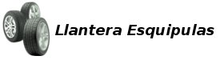

 MIS Esquipulas: Inventario: Devoluciones
Permite realizar devoluciones de compras por productos en mal
estado a clientes que lo requieran. Estas solo se pueden realizar con
autorización de la gerencia en base a una factura existente,
para poder realizar la devolución de los articulos ya sea total
o parcial de esa factura.
Para realizar una devolución debe elegir el documento en la ventana emergente
que aparece justo cuando presiona el botón nuevo. Este documento debe ser creado
previamente en el modulo de Caja.
Creando una Devolución
Como puede observar en la siguiente imagen, ya se ha elegido la factura a afectar y puede observar que en la tabla aparece la cantidad de unidades que fuerón devueltas en el documento creado en el modulo de caja y de esta forma se actualizará el inventario fisico.
 Devolución
Devolución